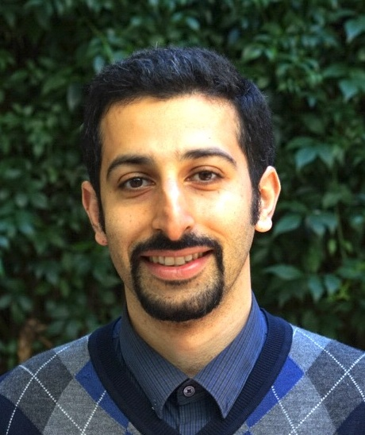

I am currently a Postdoctoral Research Fellow in the Decision and Control
Laboratory at the Georgia Institute of Technology. My advisor is Sam
Coogan. Prior to that, I was a Postdoctoral Research Fellow with the
Center for Control, Dynamical Systems, and Computation at the
University of California, Santa Barbara (UCSB). My supervisor at UCSB was
Francesco Bullo. I did my PhD in the Department of Mathematics and Statistics at Queen's
University under supervison of Andrew
Lewis.
Links: Google Scholar, Scopus,
IEEE Xplore,
and
Orcid ID: 0000-0002-7614-2940,
|

|